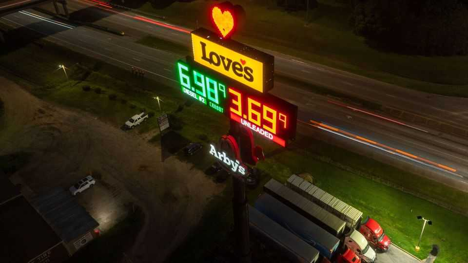
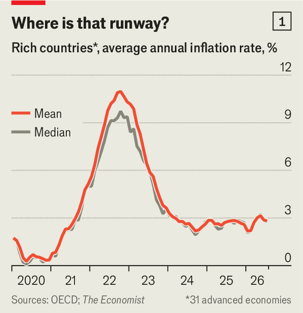
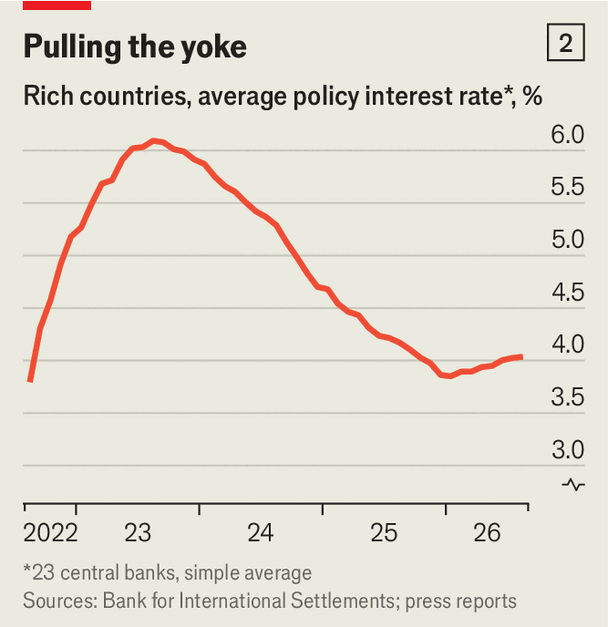

Inflation is back around the world—as is the fight against it
Central banks are raising interest rates again

Sep 10th 2026
WHO REMEMBERS the “soft landing”? In 2022-23 central bankers dreamed of bringing high inflation down without triggering a recession. Some countries came awfully close to success. Now central banks are recalibrating their instruments as price pressure builds. The world is a long way from the pain of four years ago, but the flight path is newly perilous.
On September 2nd New Zealand’s central bank raised rates. Rate-setters across the Tasman Sea have done so three times this year. The Bank of Japan did it in June and the Bank of Korea in July and August. As we published this on September 10th, the European Central Bank (ECB) was expected to raise its deposit rate to 2.5%. Many traders reckon the Federal Reserve will follow suit on September 16th.

Policymakers are responding to data (see chart 1). Average annual inflation across rich countries has stopped falling towards 2%, the target in most of them, and has instead edged up in recent months. In August it reached 3.3% in the euro zone, the highest in three years. Switzerland has inflation of just 0.8% a year, reflecting economic policy that is a wonder of the modern world. But that is a two-year high. And some places are reliving the “cost-of-living crisis”. Inflation is close to 6% in Lithuania, up from 3.1% in January.
Energy is the main culprit, but not the only one. War in Iran has caused the price of oil and natural gas to rise. In Europe, natural-gas prices are more than twice as high as before the war. They could go further as the continent’s storage tanks are refilled for the winter. Already euro-zone energy inflation is in double digits. The typical American, meanwhile, is paying just over $4 for a gallon of petrol (or $1.06 per litre), up from less than $3 in January.
The problem is bigger than fuels, however. The Economist estimates that across the rich world, average annual “core” inflation, which strips out energy and food, has risen from 2.7% in early 2026 to 2.9%. To examine countries’ underlying price pressure in more detail, we assembled comparable figures for 23 rich countries on services prices, which are largely determined by the price of labour (rather than more volatile commodities). Services inflation is rising in two-thirds of our sample, even as measures of wage growth continue to decline in many places. (One explanation for this puzzling result is that wages are not well measured; another is that falling productivity growth in services makes it harder for firms to absorb pay rises.)
So far little evidence points to people revising up the price rises they anticipate in the future—which would really spook policymakers. Most market-based measures of inflation expectations have not moved meaningfully in recent weeks. A survey by the ECB suggests that consumers expect lower inflation over the next year than they did a few months ago. Fancy leading indicators of inflation—including from Alternative Macro Signals, a consultancy, which analyses millions of news articles—do point to strengthening global inflationary pressures. But these tools’ predictive record is patchy.

Many central banks are in no mood to take chances (see chart 2). Policymakers who were criticised for dawdling in response to surging inflation in 2022 do not want to make the same mistake twice. They “shouldn’t wait” for inflation to become entrenched before acting, Slovenia’s central-bank governor has counselled. Isabel Schnabel, who sits on the ECB’s board, has warned that if rate-setters wait until energy costs pass through to pay, they could be late again.
A new tightening cycle may, then, just be getting started. UBS, a Swiss bank, reckons many of the central banks which have not yet started hiking will do so soon. Candidates include Sweden’s, and even Switzerland’s. For all the appearance of a soft landing, the flight never really ended. ■